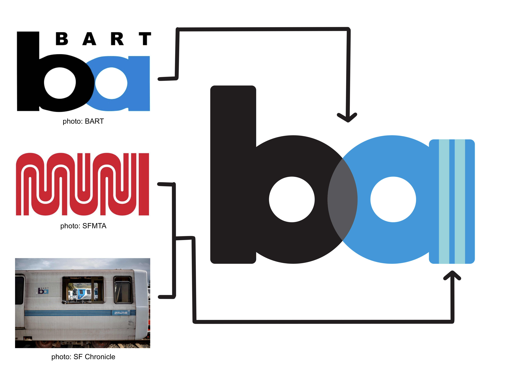

I redesigned the BART logo to meet ... [insert pic of old bart logo and bart train and muni logo]
I kept the basic concept of the original BART logo, but updated the design to reflect modern design practices and the aesthetics of an innovation-focused Bay Area. Inspired by the MUNI logo and the older Bart cars, I included a two-stripe motif in the logo.
I re-designed, the now defunt BART ticket to reflect the updates made in the logo, featuring the light blue double dtripe motif and a simple cloud illustration.